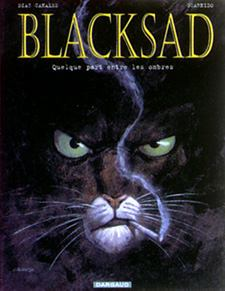

Forums galactiques > Assemblée Galactique : diplomatie officielle > Quelque part entre les ombres...
Pages : 1
| Blacksad Respect diplomatique : 77  19/06 ETU 20:53 | Score : 8 Détails Deux jours...
Deux jours passés dans la poussiere des archives a la recherche de ne serait ce qu'un semblant d'indice, pour finalement aboutir a une conclusion : On se fout de toi, Blacky, ca sent le canular a plein nez. "ET MERDE !!! Si je retrouve le connard qui joue avec moi, je lui fait bouffer son nez de clown !" Il fallait que je me calme, j'avai pas beaucoup dormi, et le coup que j'avai bu chez Astronor ne m'avait pas fait que du bien. "Voyons réflechissons, il y a bien un mot qui doit mener quelque part.." Je me repassai le message en tete : "Enqueter sur la mort de Cesco, sur Lia et le 19... Et que l'Assemblée sache" Cesco Imperator avait l'air d'avoir marqué la Galaxie par ses mots et ses actes, peu de gens lui en auraient voulu. Lia, Lia, pas facile a saisir, un de ces mystere comme on les aime, qu'on veut approcher en sachant pertinement qu'on risque de se bruler au 3e degré. Mais trop hermetique pour deceler quoi que ce soit. Le 19... un code, un chiffre symbolique, un evenement ayant un rapport avec le nombre 19... je retournai les éléments dans tout les sens, au point d'en avoir mal a la tete. Il falalit que je sorte de cette poussiere, sinon j'allai finir aussi décrépi que ces rapports d'archives... En passant devant l'accueil, le type de service me regarde avec un air étonné avant de me lancer : "Vous etes encore vivant , vous ? J'ai failli appeler les équipes de secours. -Un commentaire de plus et c'est toi qui aura besoin d'une équipe de secours, compris ?" C'est bizarre, apres ca il a moins fait le malin... Dehors il commençait a faire sombre, le soleil se couchait, en harmonie avec mon espoir de résoudre cette enquete. Une troupe d'amuseurs public faisait sa parade. "CE SOIR, MARDI 19, GRANDE REPRESENTATION DE JONGLEURS TRAPEZISTES, VENEZ NOMBREUX !!!" C'est la que la vérité m'a pété a la tronche : le 19, une date !!! Alors que les cloches de la Vérité sonnaient dans ma tete, mon X-com decida d'etre de la partie : Da-ling !! Nouveau message : Destinataire inconnu "Je suis prêt à vous rencontrer. Attendez moi chez Parisii. L'endroit est abandonné, il conviendra très bien. Soyez discret." Fin du message... La bonne nouvelle, c'etait que j'allai droit dans une embrouille et que je le savais... La mauvaise c'etait que je ne savai pas laquelle... Ce Sphinx commençait a me chauffer les oreilles, j'allai lui montrer qu'un chat échaudé ne craignait pas l'eau froide. Ma fly-bike démarra dans un bruit d'enfer... |
Pages : 1
Forums galactiques > Assemblée Galactique : diplomatie officielle > Quelque part entre les ombres...